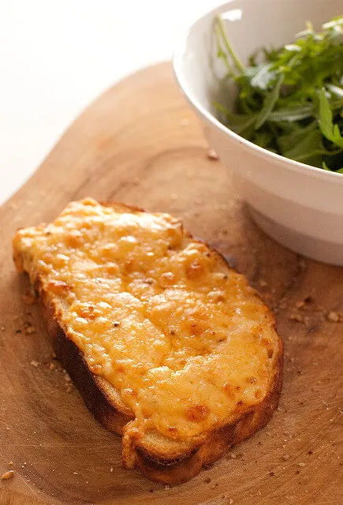

Recipe for Cheese on Toast

The ultimate Cheese on Toast!
I’ve always been a huge fan of cheese on toast. Here’s how to make Cheese on Toast… my simple secret to the ultimate oozy, cheesey goodness…
What you will need.
- Bread
- Cheese
- Butter
- Mustard
- Egg mayonnaise
Steps
- Preheat oven to 250C (480F). Generously butter bread and place on a baking tray lined with foil or baking paper.
- Bake for 3 minutes or until butter is melted.
- Top with slices of cheese to completely cover the bread. Bake for another 5 minutes or until the cheese is melted and bubbling with golden brown patches.
